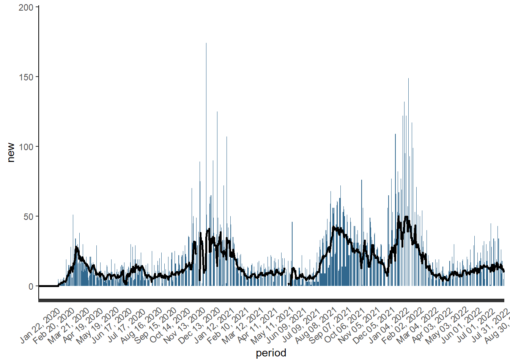
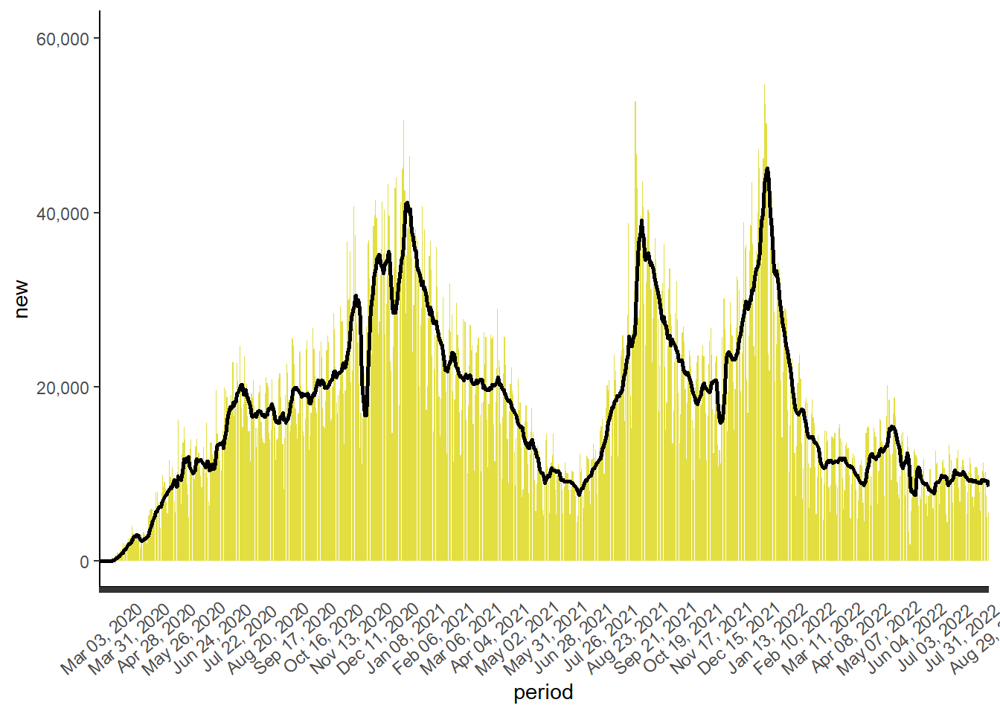

CDC COVID-19 Report
Virginia Monthly COVID Report
indicator | cum | new | avg | change | 7cum |
Cases^[] | 2042890 | 2784 | 2458 | -0.8% | 201.6 |
Hospital Admissions^ | NA | 38 | 112 | -15.8% | 9.2 |
Deaths* | 21439 | 23 | 15 | -6.2% | 1.2 |
Test Volume† | 15,984,836 | N/A | 9,201 | 1.7% | 704.9 |
Test Positivity† | 13.5% | N/A | 22.3% | -4.4% | N/A |
Monthly Change in COVID-19 Cases, Virginia

Monthly Change in COVID-19 Hospital Admissions, Virginia

Monthly Change in COVID-19 Deaths, Virginia

Monthly Change in COVID-19 Testing, Virginia
